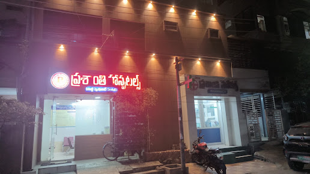

Contact & location
Visit Prasanthi Hospitals in Governorpet, Vijayawada, or speak with our team before your visit.
Get in touch.
- Appointments & enquiries
- 895 6969 895
- Landline
- 0866-7960268
- Message 895 6969 895
- Official email
- PrashantiHospitals1985@Gmail.com
- OPD timings
- Morning: 10:30 AM – 2:00 PM
Evening: 6:00 PM – 9:00 PM
Dr. Nishteshwar is not available for evening OPD. Please contact the hospital team to confirm your doctor’s availability before travelling.
Find the hospital.
Ksheerasagar Hospital Road, Beside N.T.R. Sahakara Bhavan, Governorpet, Vijayawada – 520002, Andhra Pradesh, IndiaLandmark: Beside N.T.R. Sahakara Bhavan.

Photo source: Google Maps
Planning a consultation?
Confirm your doctor's availability before travelling, and bring your previous prescriptions and relevant reports.